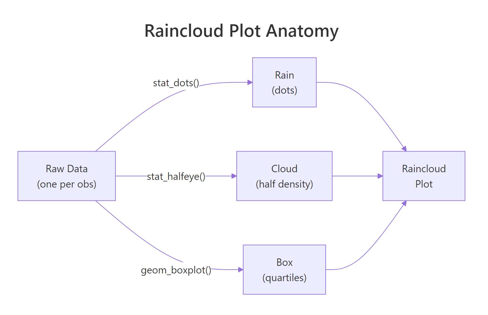
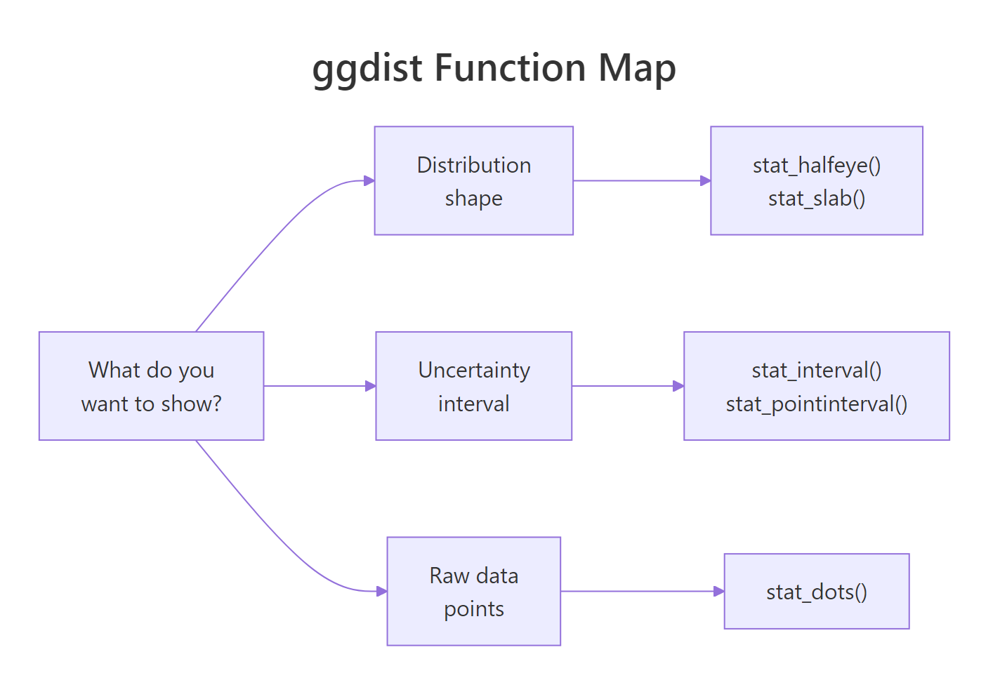

ggdist Package in R: Visualize Distributions & Uncertainty (Raincloud Plots)
The ggdist package extends ggplot2 with geoms and stats that draw raw data, full distributions, and uncertainty intervals in the same frame, the foundation for raincloud plots and uncertainty visuals in R.
What is a raincloud plot and when should you use one?
A raincloud plot shows three things at once: the raw observations (the rain), the kernel density (the cloud), and a summary box for the quartiles. It tells you at a glance whether a group has outliers, bimodality, or just a wide spread, details a plain boxplot hides. Let's build one on the iris dataset so you can see the payoff before we break apart the pieces.
The code below layers three geoms on the same Species → Sepal.Length mapping: stat_halfeye() for the half-density cloud, geom_boxplot() for the quartile box, and stat_dots() for the raw observations pushed to one side. Run the block and watch three familiar plots fuse into one.
Look at virginica: the cloud is noticeably wider than the box suggests, and the dots on the left reveal a small cluster near 7.7 cm that a boxplot would smooth away. This is the whole point, the raincloud shows shape, not just quartiles. Readers notice the long tail and ask the right follow-up question.
Try it: Rebuild the same plot, but show Petal.Width instead of Sepal.Length. The rest stays the same, only the y mapping changes.
Click to reveal solution
Explanation: Swapping the y aesthetic is enough; every layer inherits the same mapping from ggplot().
How does stat_halfeye() draw the half-density cloud?
stat_halfeye() is the core ggdist function. It draws a half-density slab plus an interval underneath, and every raincloud plot's "cloud" layer is this function. Two parameters matter most: adjust controls the kernel bandwidth (smoothness), and .width sets which intervals to draw below the density.
The code below shows stat_halfeye() in isolation on iris, with two different adjust values so you can see how bandwidth changes the shape. Lower adjust = wigglier density; higher adjust = smoother.
Notice the intervals underneath each density. The thick black bar is the 66% interval (middle two-thirds of the data) and the thin bar is the 95% interval. Setting .width = c(0.66, 0.95) drew both at once, which is the convention for showing nested uncertainty without clutter.
c(0.5, 0.8, 0.95) gives you three bars of decreasing thickness, readers see the uncertainty hierarchy without needing a legend.Try it: Draw the same halfeye but suppress the interval bar entirely by setting .width = 0.
Click to reveal solution
Explanation: .width = 0 tells ggdist to skip the interval geom entirely, leaving only the slab (density).
How do stat_dots() and stat_slab() complete the raincloud?
stat_dots() draws a quantile dot plot, every dot represents a slice of the distribution, so the shape of the dot cloud is itself informative. stat_slab() is the density-only sibling of stat_halfeye(): same cloud, no interval bar. Together with geom_boxplot() they form the three layers of a raincloud plot.
The block below stacks all three on a single iris plot, styled more carefully than the opening example. Pay attention to side = "left" on stat_dots(), that's what pushes the rain to one side while the cloud floats on the other.

Figure 1: A raincloud plot layers three geoms, stat_dots for raw observations, stat_halfeye (or stat_slab) for the density cloud, and geom_boxplot for quartile summaries.
Each dot in stat_dots() is not a raw observation, it's a quantile dot, placed at an even slice of the distribution. That's why changing binwidth affects how dots are spaced but not their total count per group. The dot cloud's shape mirrors the density curve, giving the reader a second redundant signal that the pattern is real, not an artifact.
Try it: Move stat_dots() to side = "right" so the rain and the cloud switch sides. Leave everything else.
Click to reveal solution
Explanation: side = "right" places the dot cloud on the same side as the stat_slab density. The two geoms overlap, which is exactly why rainclouds put dots on "left" by default.
How do you show uncertainty with stat_interval() and stat_pointinterval()?
Most raincloud tutorials stop at the cloud. But ggdist's real superpower is visualizing uncertainty intervals, the job that would otherwise need a custom geom_errorbar(). stat_interval() draws multiple nested confidence bands at once, and stat_pointinterval() draws a single point estimate with its interval attached.
The code below summarises mpg by number of cylinders from mtcars, then uses stat_pointinterval() to show the mean and three nested intervals at 50%, 80%, and 95% widths. No model needed, ggdist computes the intervals directly from the data.
The three nested bars do the work of a conventional error bar plus two reference intervals in one geom. Readers immediately see that 4-cylinder cars have both higher mean mpg and wider uncertainty (because only 11 of the 32 cars in mtcars are 4-cylinder). That's a story a single error bar couldn't tell.
stat_pointinterval() uses the sample quantiles. If you do have a model (e.g., a Bayesian posterior), pass samples via the dist_sample() helper and ggdist will compute intervals from those instead.Try it: Swap stat_pointinterval() for stat_interval() (same .width values) and see how the plot changes.
Click to reveal solution
Explanation: stat_interval() draws interval bands only, while stat_pointinterval() adds the central point estimate on top. Use stat_interval() when the point itself would clutter the figure (e.g., many small groups).
How do you visualize analytical distributions with dist_normal()?
So far every plot has been driven by raw data. But sometimes you want to draw a named distribution, a Normal, a Beta, a Student-t, to compare shapes, illustrate a concept, or overlay a theoretical curve on empirical data. ggdist's dist_* family lets you do this with the same stats you already know.
The trick is the xdist aesthetic. Instead of mapping x to a variable, you map xdist to a distribution object built with dist_normal(), dist_beta(), dist_student_t(), and friends. Then stat_slab() draws the parametric density directly.
Not a single data point touches stat_slab() here, ggdist asks the distributional package to evaluate each curve and draws the density. This is the same mechanism used to plot Bayesian posteriors: you pass dist_sample(posterior_draws) and ggdist handles the rest.

Figure 2: Pick a ggdist function by what you want to show, distribution shape, uncertainty interval, or individual observations.
Try it: Change the Student-t's degrees of freedom from 3 to 30. The shape should converge toward a Normal curve (a standard result from probability theory).
Click to reveal solution
Explanation: As df → ∞, the Student-t distribution converges to the Normal. At df = 30 the two are already visually indistinguishable, which is why statistics texts say "use Normal instead of t when n > 30."
Practice Exercises
Exercise 1: Raincloud for mtcars mpg by cylinder count
Build a raincloud plot of mpg grouped by cyl from mtcars. Use stat_halfeye() for the cloud, geom_boxplot() for the box, and stat_dots() for the rain. Flip the coordinates so cylinder counts appear on the y-axis.
Click to reveal solution
Explanation: cyl must be a factor for ggplot to treat it as a grouping variable. The rest is the standard three-layer raincloud recipe from earlier sections.
Exercise 2: Combine stat_halfeye and stat_pointinterval
Build a single plot that layers stat_halfeye() with a thin .width = 0 (density only) and stat_pointinterval() at .width = c(0.66, 0.95) on top. Use iris and show Sepal.Length by Species. The effect: a density cloud and an explicit interval summary on the same figure.
Click to reveal solution
Explanation: stat_halfeye() handles the density shape, stat_pointinterval() adds the summary. position_nudge() offsets the interval slightly so the two layers don't overlap visually.
Exercise 3: Three Beta distributions from parameters
Use dist_beta() and stat_slab() to plot Beta(1, 1), Beta(2, 5), and Beta(5, 2) on the same figure. These three shapes illustrate the uniform, right-skewed, and left-skewed cases of the Beta family.
Click to reveal solution
Explanation: Beta(1, 1) is the uniform distribution on [0, 1]. Raising either shape parameter above 1 creates a hump; when the first exceeds the second the hump leans right, and vice versa.
Putting It All Together
Let's close with an end-to-end raincloud on a larger dataset: diamonds$price by cut. This one uses every pattern from the tutorial, halfeye cloud, boxplot summary, quantile dots, coordinate flip, custom palette, and shows what a publication-ready figure looks like.
The long right tail is the thing to notice. All five cuts have similar lower halves, but Ideal and Premium cuts extend further into the expensive range. A boxplot would show the medians as nearly equal and mislead you; the raincloud makes the tail story obvious.
Summary
| Function | Shows | Typical use |
|---|---|---|
stat_halfeye() |
Half density + interval bar | Raincloud cloud layer; summary with uncertainty |
stat_slab() |
Density only (slab) | Parametric distributions, no intervals |
stat_dots() |
Quantile dots | Raincloud rain layer |
stat_interval() |
Nested interval bands | Forest-plot style summaries |
stat_pointinterval() |
Point + interval | Model/group summary with uncertainty |
dist_normal() / dist_beta() / dist_student_t() |
Parametric distribution objects | Plot without raw data via xdist aesthetic |
- Rainclouds = halfeye + boxplot + dots. Opposite sides prevent overlap.
.widthaccepts a vector. Draw nested intervals in one call.xdist+dist_*()plots distributions from parameters. Same stats, no raw data needed.- Intervals come from raw quantiles by default. No model required for
stat_pointinterval(). - Use
adjustto tune density smoothness. Lower = wigglier, higher = smoother.
References
- ggdist documentation, Matthew Kay. mjskay.github.io/ggdist
- ggdist on CRAN, package reference manual. cran.r-project.org/package=ggdist
- Allen, M., Poggiali, D., Whitaker, K., Marshall, T. R., & Kievit, R. A., Raincloud plots: a multi-platform tool for robust data visualization. Wellcome Open Research (2019). Link
- Kay, M., Uncertainty visualization with ggdist (package vignette). Link
- Wilke, C., Fundamentals of Data Visualization, Chapter 9: Visualizing distributions. Link
- distributional package, Mitchell O'Hara-Wild. pkg.mitchelloharawild.com/distributional
- tidyverse blog, ggdist release notes. Link
Continue Learning
- ggplot2 Distribution Charts: Histograms, Density, Boxplots, the parent post on basic distribution geoms
- ggplot2 Tutorial, ggplot2 fundamentals if you want a refresher on layers and aesthetics
- Density Plot in R, base-R and lattice approaches to density visualization